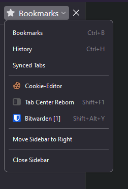

Adding Bitwarden to the Pinephone Pro
Preamble
Directions on adding Bitwarden on the Pinephone Pro on PMOS PHOSH. It relies the Firefox Bitwarden extension and a .desktop file that's used to open it.
Bitwarden Setup
Adding the extension
Reduce your screen scaling to the lowest available in the PHOSH settings. This prevents rendering glitches.
- Open Firefox
- Install the Bitwarden extension from https://addons.mozilla.org
- Press "C-b" to open the firefox sidebar. Use the drop down to switch from the bookmarks view to Bitwarden. Login afterward.

Getting the extension ID
Navigate to about:debugging#/runtime/this-firefox
Scroll down until you see the extension ID and copy it to a text file. We'll need it later.

Creating the .desktop file
This is the meat of it all. Create the following desktop file and paste in these content
~/.local/share/applications/bitwarden.desktop
[Desktop Entry]
Name=Bitwarden
Comment=Manage your passwords
Exec=firefox-esr --new-window "moz-extension://YOUR_EXTENSION_ID/popup/index.html"
Terminal=false
Type=Application
Icon=/home/user/.local/share/applications/images/bitwarden.png
Categories=Network;WebBrowser;
StartupWMClass=Firefox-esrBitwarden should now be added to your desktop. If you don't see it pop up, make sure the firefox-esr application exists and is in your path. If the .desktop file cant find the program in the path it gets ignored.
My permissions for the file is 0644